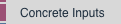
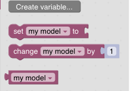
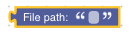
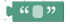
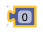

Variables and Constant Inputs
Variables
GeoArmadillo uses the Blockly features to define variables. After clicking on create variable… in the variables section of the toolbox, Blockly creates a set of Blocks for accessing the variable.
This is the example output of creating the variable my model.
Currently, GeoArmadillo only uses the lowermost Variable Block, which can be joined into other blocks.
Paths
To enter a file path in the file system, please use the File Path Block. The path can be absolute or relative:
Text
Text is represented by the green Text Box:
Numbers
Numbers are defined by the purple Number Block:
